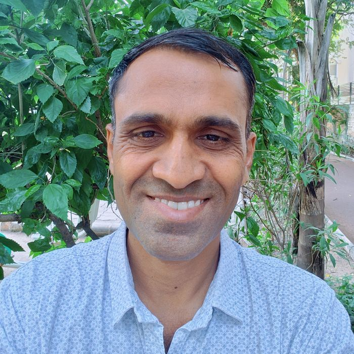

Jitendra Rathod
Jitendra Rathod is a development professional with over 18 years of experience working to advance the dignity, rights, safety, and livelihoods of marginalized communities, particularly the Valmiki community, sanitation workers, and the urban poor.
He has led initiatives focused on ending manual scavenging, promoting safe and dignified sanitation work, strengthening community-led organisations, expanding access to education and livelihoods, and advancing housing and social protection rights. His experience includes program leadership, legal and policy advocacy, donor engagement, resource mobilisation, and building grassroots leadership.
As a Director and Leader of Manav Garima Foundation, Jitendra contributes to the organisation's vision, strategic direction, and efforts to build sustainable, community-led solutions for dignity, safety, empowerment, and social justice.